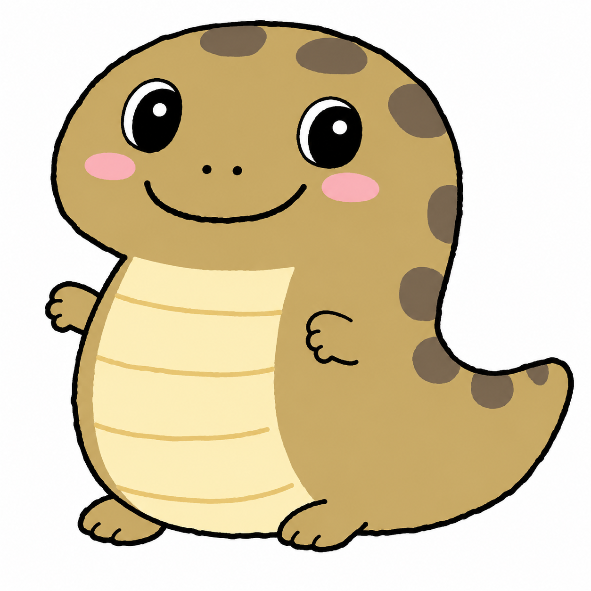

S-041
農道脇で短く太い影を確認
夕方に茶色い胴体状の影を見たとの報告。捕獲班の出動可否を確認中です。
公開情報ページ
本会では、各地に伝わるツチノコの目撃談、痕跡、写真、音声を受け付け、 捕獲候補地の選定、現地確認、捕獲班の出動計画に活用しています。
画像はイメージです。
Status
寄せられた情報は、捕獲調査の優先度を判断する資料として整理します。
Mascot
捕獲調査への協力を、親しみやすく呼びかけるための案内役です。

Official Mascot
目撃情報の提供や捕獲調査への協力を呼びかけるマスコットです。 現地確認時の注意点や、捕獲班へ伝えてほしい情報を分かりやすく案内します。
Capture Radar
寄せられた目撃情報と現地報告をもとに、捕獲優先度を表示しています。
反応が高い地域から順に、捕獲班の出動候補として確認します。
Records
捕獲調査の対象として整理している主な情報です。
夕方に茶色い胴体状の影を見たとの報告。捕獲班の出動可否を確認中です。
落ち葉の上に連続したこすれ跡があったとの報告。捕獲器の設置候補として整理しています。
複数名から音に関する情報提供があり、夜間確認の候補として整理しています。
Guidance
発見時は無理に捕まえず、捕獲班が確認できる情報を残してください。
市町村名、周辺の目印、確認した時刻、天候を可能な範囲でお知らせください。
逃げ込んだ方向、周囲の草木、側溝、石垣など、捕獲班が確認しやすい情報が有用です。
私有地や危険な場所には入らず、捕獲班の到着まで距離を保ってください。
Contact
目撃情報、写真、音声、捕獲候補地の情報などを受け付けています。 提供内容は捕獲調査の判断材料として整理します。
画像はイメージです。
現在、多くの捕獲候補情報が寄せられているため、情報提供の受付を一時停止しています。 受付再開までしばらくお待ちください。